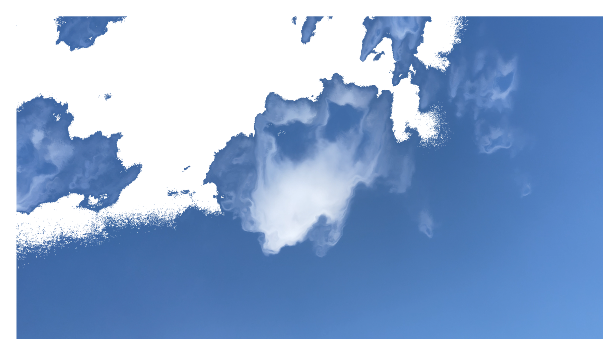

I remember the story called monkeys reaching for the moon, in which a
group of monkeys try to capture the moon by capturing the reflection of
it in the water. The very idea of capturing something that is so far
away yet at the same time so intimately close fascinates me.
Like the monkeys, I tried to capture the moon, in my phone.
Like the monkeys, I tried to capture the moon, in my phone.